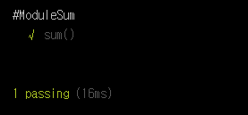

Mocha Tutorial - Step 05. 외부 모듈 테스트
어느 프로그램 언어나 마찮가지겠지만 JavaScript 역시 하나의 .js파일에 코딩하진 않는다. Mocha 역시 하나의 test.js 파일에 모두 테스트 케이스를 적진 않는다.
이번 Tutorial에서는 외부 모듈을 불러와서 테스트하는 방법을 알아보겠다. 생각보다 분량이 적지만 매우 효율적인 방법이 될 것이다.
외부 모듈 생성하기
앞으로 있을 Tutorial에서는 Mocha를 브라우저에서 구동 방법을 배울 것이다. 이에 앞서 일단 우리는 터미널에서 돌려보도록 하겠다. 일단 간단하게 sum()함수를 만들어 보도록 하자. 명칭 그대로 합계를 내는 함수이다.
파일명은 ModuleSum이라고 정의해 보자.
1 | module.exports = { |
매우 간단한 함수이다. 위에서 브라우저에서 구동하는 방법을 배운다는 건 이 부분이 약간 다르기 때문이다. 우리는 ModuleSum을 export하였지만 브라우저 구동 방식에서는 그저 Function만 생성하면 된다. 이미 index.html에서 script를 Import하기 때문이다.
외부 모듈 불러오기
이제 외부 모듈인 ModuleSum이 생성되었다. 이 모듈을 불러와서 테스트만 진행하면 끝이다.
test.js파일을 생성하고 코드를 작성하자.
1 | var chai = require('chai'), |
실행하여 결과를 확인해 보자.

설명이 별로 필요하지 않는 코드이다. require로 이미 생성한 ModuleSum을 불러오고 적절한 테스트 케이스를 통해 테스트를 진행한다.
사실 이 Tutorial을 쓸까말까 고민했었는데 누군가에게 도움이 되길 바라며 짤막하게 포스팅 해보았다. 다음 Tutorial에서는 아까 언급한 브라우저에서 구동 방법을 진행하도록 하겠다.